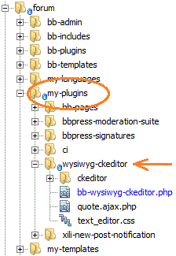

Wysiwyg CKEditor v 0.5
Changes since 0.3
- Added support for both correct and incorrect installatoin paths
- Fixed the plugin folder name
- Added html Readme file to make installation easier
About
- Powerful editor with nested quotes support!
- Custom smile pack
Installation
1) Put bb-wysiwyg-ckeditor folder into my-plugins folder
NOT into bb-plugins! it must be in the MY-PLUGINS folder!!!
2) Put smiles folder into your site root
3) Activate plugin
That's all. Enjoy!
Customization
CKEditor is very powerful and feature-rich, you may download examples from it's site
and see what features you can add. Most are disabled by default.
You may edit supplied text_editor.css for styles inside editor area, customize the toolbar and everything else.
Smiles
if you wish to use standard smiles of CKEditor, then open bb-wysiwyg-editor.php
and remove everything between:
// custom smiles
...
// end custom smiles
there you may also change path to smiles folder and the set of smiles
Autogrow
wonderful feature - automatically resize the height of editor
(if your forum theme is simple enough to not break it)
to try it, uncomment line
//,extraPlugins : 'autogrow'
Other
spellcheck plugins are removed by default, by the next line:
removePlugins : 'scayt,spellchecker',
default editor height is 350 or 250 px depending on page (defined
on line 68)
Important things to note
1) editor has style 'position: relative;'
otherwise it will not work in IE if put inside layout with "margin:auto"
2) when editing a post, edit-form.php from your theme is used,
but the contents it puts into the textarea IS ERASED!
instead, to make editor work properly, text is echoed into JS variable WITHOUT ANY FILTERS:
$quoted_post = bb_quote_jschars( get_post_text() );
printf( '<script type="text/javascript">var bb_quoted_post="%s";</script>', $quoted_post );
if this is not done - editor contents is loaded incorrectly, so you can not escape blockquotes
(maybe, other artifacts are also possible)
3) jQuery is included as a link to google:
<script type="text/javascript" src="http://ajax.googleapis.com/ajax/libs/jquery/1.4/jquery.min.js"></script>
4) Important note for developers
the JS function
CKEDITOR.on( 'instanceReady', function( ev )
along with right quote formatting
"<blockquote><p><cite>%s <a href=\"%s\">wrote</a>:</cite>%s</p></blockquote><p></p>"
and JS vars bb_quoted_post and bb_ckeditor_savedContents
are base for proper <blockquote> handling and handling of NESTED blockquotes.
The <p> tag inside blockquote is needed as blockquote must contain only BLOCK elements
if you change any tags there then double check if result is properly formmated
and you can edit and escape blockquotes and other nested blocks
Without this mechanism, there WILL be situations, when you will not be able to escape from a blockquote in editor.
Bugs
If it does not work for you - fix it yourself and make a post on bbPress forums:
http://bbpress.org/plugins/topic/wysiwyg-ckeditor/
This plugin very simple and much better than original Wysiwyg editor for bbPress.